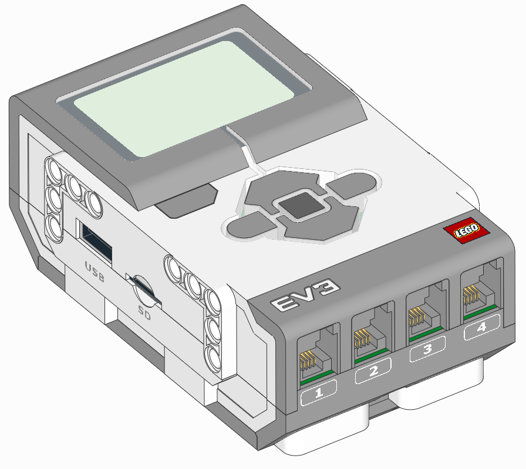

hubs – プログラマブルハブ¶

-
class
EV3Brick¶ LEGO® MINDSTORMS® EV3 Brick.
ボタンを使う
現在押されているボタンを確認します。
戻り値: 押されているボタンのリスト。 戻り値の型: Buttonのリスト
ブロックのステータスライトを使う
-
light.on(color)¶ 指定した色でライトを点灯します。
パラメータ: color (Color) – ライトの色。 Noneまたは利用できない色を選ぶとライトは消灯します。例を表示/非表示
例: ライトを点灯して色を変えます。
#!/usr/bin/env pybricks-micropython from pybricks.hubs import EV3Brick from pybricks.tools import wait from pybricks.parameters import Color # EV3を初期化 ev3 = EV3Brick() # 赤色でライトを点灯 ev3.light.on(Color.RED) # 待機 wait(1000) # ライトを消す ev3.light.off()
-
light.off()¶ ライトを消します。
スピーカーを使う
-
speaker.beep(frequency=500, duration=100)¶ ビープ音を再生します。
パラメータ:
-
speaker.play_notes(notes, tempo=120)¶ 一連の音符を再生します。
例えば、次のように演奏できます:
['C4/4', 'C4/4', 'G4/4', 'G4/4'].パラメータ: - notes (iter) – 再生する音符のシーケンス(下記の形式を参照)。
- tempo (int) – 4分音符を1拍としたときの1分あたりの拍数。
音符の形式を表示/非表示
各音符は以下の形式の文字列です:
- 最初の文字は音名で、
AからG、または休符を表すRです。 - 音名には変化記号
#(シャープ)またはb(フラット)を付けられます。B#/CbとE#/Fbは使用できません。 - 音名の後にはオクターブ番号
2から8が続きます。例えばC4は中央のCです。オクターブはCの音で次の番号に切り替わります。例えばB3は中央のC(C4)の1つ下の音です。 - オクターブの後は
/と音符の長さを表す数字が続きます。例えば/4は4分音符、/8は8分音符、という具合です。 - この後に任意で
.を付けると付点音符になります。付点音符は点のない音符の1.5倍の長さになります。 - 音符の最後に任意で
_を付けるとタイまたはスラーになり、その音符と次の音符の間に休止が入りません。
-
speaker.play_file(file_name)¶ サウンドファイルを再生します。
パラメータ: file_name (str) – 拡張子を含むサウンドファイルへのパス。
-
speaker.say(text)¶ 指定したテキストを読み上げます。
set_speech_options()でテキストの言語と音声を設定できます。パラメータ: text (str) – 読み上げるテキスト。
-
speaker.set_speech_options(language=None, voice=None, speed=None, pitch=None)¶ say()メソッドで使うスピーチ設定を行います。Noneに設定されたオプションは変更されません。無効な値が設定された場合、say()はデフォルト値を代わりに使用します。パラメータ: - language (str) – テキストの言語。例えば
'en'(英語)や'de'(ドイツ語)を選べます。利用可能な言語の一覧は下記の通りです。 - voice (str) – 使用する音声。例えば
'f1'(女性の声バリエーション1)や'm3'(男性の声バリエーション3)を選べます。利用可能な音声の一覧は下記の通りです。 - speed (int) – 1分あたりの単語数。
- pitch (int) – ピッチ(0から99)。数値が大きいほど高い声に、小さいほど低い声になります。
利用可能な言語と音声を表示/非表示
以下の言語を選択できます:
'af': アフリカーンス語'an': アラゴン語'bg': ブルガリア語'bs': ボスニア語'ca': カタルーニャ語'cs': チェコ語'cy': ウェールズ語'da': デンマーク語'de': ドイツ語'el': ギリシャ語'en': 英語(デフォルト)'en-gb': 英語(イギリス)'en-sc': 英語(スコットランド)'en-uk-north': 英語(イギリス、北部)'en-uk-rp': 英語(イギリス、容認発音)'en-uk-wmids': 英語(イギリス、ウェスト・ミッドランズ)'en-us': 英語(アメリカ合衆国)'en-wi': 英語(西インド諸島)'eo': エスペラント語'es': スペイン語'es-la': スペイン語(ラテンアメリカ)'et': エストニア語'fa': ペルシャ語'fa-pin': ペルシャ語(ラテン文字)'fi': フィンランド語'fr-be': フランス語(ベルギー)'fr-fr': フランス語(フランス)'ga': アイルランド語'grc': ギリシャ語(古典)'hi': ヒンディー語'hr': クロアチア語'hu': ハンガリー語'hy': アルメニア語'hy-west': アルメニア語(西部)'id': インドネシア語'is': アイスランド語'it': イタリア語'jbo': ロジバン語'ka': ジョージア語'kn': カンナダ語'ku': クルド語'la': ラテン語'lfn': リングワ・フランカ・ノバ'lt': リトアニア語'lv': ラトビア語'mk': マケドニア語'ml': マラヤーラム語'ms': マレー語'ne': ネパール語'nl': オランダ語'no': ノルウェー語'pa': パンジャブ語'pl': ポーランド語'pt-br': ポルトガル語(ブラジル)'pt-pt': ポルトガル語(ポルトガル)'ro': ルーマニア語'ru': ロシア語'sk': スロバキア語'sq': アルバニア語'sr': セルビア語'sv': スウェーデン語'sw': スワヒリ語'ta': タミル語'tr': トルコ語'vi': ベトナム語'vi-hue': ベトナム語(フエ)'vi-sgn': ベトナム語(サイゴン)'zh': 中国語(標準語)'zh-yue': 中国語(広東語)
以下の音声を選択できます:
'f1': 女性の声バリエーション1'f2': 女性の声バリエーション2'f3': 女性の声バリエーション3'f4': 女性の声バリエーション4'f5': 女性の声バリエーション5'm1': 男性の声バリエーション1'm2': 男性の声バリエーション2'm3': 男性の声バリエーション3'm4': 男性の声バリエーション4'm5': 男性の声バリエーション5'm6': 男性の声バリエーション6'm7': 男性の声バリエーション7'croak': しわがれ声'whisper': ささやき声'whisperf': 女性のささやき声
- language (str) – テキストの言語。例えば
-
speaker.set_volume(volume, which='_all_')¶ スピーカーの音量を設定します。
パラメータ: - volume (割合: %) – スピーカーの音量。
- which (str) – 設定する音量の対象。
'Beep'はbeep()とplay_notes()の音量を設定します。'PCM'はplay_file()とsay()の音量を設定します。'_all_'は両方を同時に設定します。
スクリーンを使う
-
screen.clear()¶ スクリーンをクリアします。スクリーン上のすべてのピクセルが
Color.WHITEに設定されます。
-
screen.draw_text(x, y, text, text_color=Color.BLACK, background_color=None)¶ スクリーンにテキストを描画します。
直前に
set_font()で設定したフォントが使用されます。まだフォントが設定されていない場合はFont.DEFAULTが使われます。パラメータ:
-
screen.print(*args, sep=' ', end='\n')¶ スクリーンに1行のテキストを表示します。
このメソッドは組み込みの
print()関数と同じように動作しますが、出力先がスクリーンになります。set_font()でフォントを設定できます。フォントが設定されていない場合はFont.DEFAULTが使われます。テキストは常に白背景に黒文字で表示されます。組み込みの
print()とは異なり、テキストがスクリーンに収まらないほど長い場合でも折り返されず、そのまま切り落とされます。ただしテキストがスクリーンの下端を超える場合は、画像全体が上にスクロールし、スクリーン下部にできた新しい空白領域にテキストが表示されます。パラメータ: - * (object) – 表示するオブジェクト(0個以上)。
- sep (str) – 表示される各オブジェクトの間に挟まる区切り文字。
- end (str) – 最後のオブジェクトの後に表示される行末文字。
例を表示/非表示
例: さまざまな方法でhelloと表示します。
#!/usr/bin/env pybricks-micropython from pybricks.hubs import EV3Brick from pybricks.tools import wait from pybricks.media.ev3dev import Font # フォントをファイルから読み込むには時間がかかるため、このように # プログラムの最初で一度だけ読み込むのが最適です: tiny_font = Font(size=6) big_font = Font(size=24, bold=True) chinese_font = Font(size=24, lang='zh-cn') # EV3を初期化 ev3 = EV3Brick() # helloと表示 ev3.screen.print('Hello!') # 小さくhelloと表示 ev3.screen.set_font(tiny_font) ev3.screen.print('hello') # 大きくhelloと表示 ev3.screen.set_font(big_font) ev3.screen.print('HELLO') # 中国語でhelloと表示 ev3.screen.set_font(chinese_font) ev3.screen.print('你好') # スクリーンを確認するためしばらく待機 wait(5000)
-
screen.set_font(font)¶ スクリーンへの描画に使うフォントを設定します。
このフォントは
draw_text()とprint()の両方で使われます。パラメータ: font ( Font) – 使用するフォント。例:
print()の両方で使われます。
-
screen.load_image(source)¶ スクリーンをクリアしてから、
sourceの画像をスクリーンの中央に描画します。パラメータ: source (Image または str) – ソースとなる Image。引数が文字列の場合、sourceの画像はファイルから読み込まれます。例を表示/非表示
例: スクリーンに画像を表示します。
#!/usr/bin/env pybricks-micropython from pybricks.hubs import EV3Brick from pybricks.tools import wait from pybricks.media.ev3dev import Image, ImageFile # SDカードから画像を読み込むには時間がかかるため、このように # プログラムの最初で一度だけ読み込むのが最適です: ev3_img = Image(ImageFile.EV3_ICON) # EV3を初期化 ev3 = EV3Brick() # 画像を表示 ev3.screen.load_image(ev3_img) # 画像を確認するためしばらく待機 wait(5000)
-
screen.draw_image(x, y, source, transparent=None)¶ sourceの画像をスクリーンに描画します。パラメータ:
-
screen.draw_pixel(x, y, color=Color.BLACK)¶ スクリーンに1ピクセルを描画します。
パラメータ: - x (int) – ピクセルのx座標。
- y (int) – ピクセルのy座標。
- color (Color) – ピクセルの色。
-
screen.draw_line(x1, y1, x2, y2, width=1, color=Color.BLACK)¶ スクリーンに直線を描画します。
パラメータ: - x1 (int) – 線の始点のx座標。
- y1 (int) – 線の始点のy座標。
- x2 (int) – 線の終点のx座標。
- y2 (int) – 線の終点のy座標。
- width (int) – 線の幅(ピクセル単位)。
- color (Color) – 線の色。
例を表示/非表示
例: スクリーンにいくつかの図形を描画します。
#!/usr/bin/env pybricks-micropython from pybricks.hubs import EV3Brick from pybricks.tools import wait # EV3を初期化 ev3 = EV3Brick() # 長方形を描画 ev3.screen.draw_box(10, 10, 40, 40) # 塗りつぶした長方形を描画 ev3.screen.draw_box(20, 20, 30, 30, fill=True) # 角丸の長方形を描画 ev3.screen.draw_box(50, 10, 80, 40, 5) # 円を描画 ev3.screen.draw_circle(25, 75, 20) # 線を使って三角形を描画 x1, y1 = 65, 55 x2, y2 = 50, 95 x3, y3 = 80, 95 ev3.screen.draw_line(x1, y1, x2, y2) ev3.screen.draw_line(x2, y2, x3, y3) ev3.screen.draw_line(x3, y3, x1, y1) # 図形を確認するためしばらく待機 wait(5000)
-
screen.draw_box(x1, y1, x2, y2, r=0, fill=False, color=Color.BLACK)¶ スクリーンに矩形を描画します。
パラメータ: - x1 (int) – 矩形の左辺のx座標。
- y1 (int) – 矩形の上辺のy座標。
- x2 (int) – 矩形の右辺のx座標。
- y2 (int) – 矩形の下辺のy座標。
- r (int) – 矩形の角の半径。
- fill (bool) –
Trueの場合、矩形がcolorで塗りつぶされます。False の場合は輪郭のみ描画されます。 - color (Color) – 矩形の色。
例:
draw_line()の例を参照してください。
-
screen.draw_circle(x, y, r, fill=False, color=Color.BLACK)¶ スクリーンに円を描画します。
パラメータ: - x (int) – 円の中心のx座標。
- y (int) – 円の中心のy座標。
- r (int) – 円の半径。
- fill (bool) –
Trueの場合、円がcolorで塗りつぶされます。False の場合は円周のみ描画されます。 - color (Color) – 円の色。
例:
draw_line()の例を参照してください。
-
screen.width¶ スクリーンの幅をピクセル単位で取得します。
-
screen.height¶ スクリーンの高さをピクセル単位で取得します。
-
screen.save(filename)¶ スクリーンを
.pngファイルとして保存します。パラメータ: filename (str) – 保存するファイルのパス。
例外: TypeError–filenameが文字列ではありません。OSError– ファイルの保存中に問題が発生しました。
バッテリーを使う